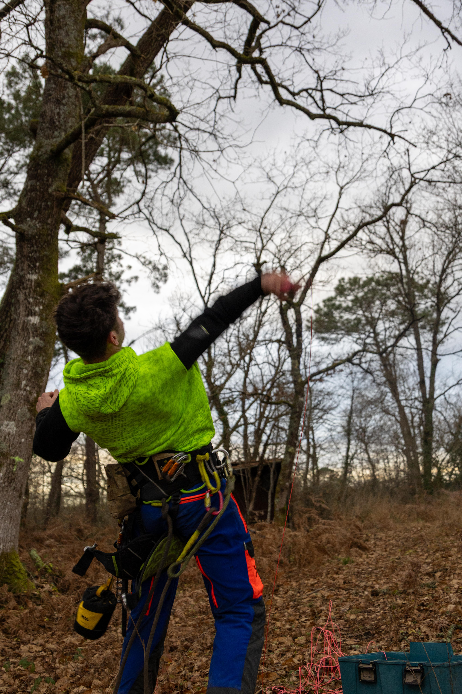
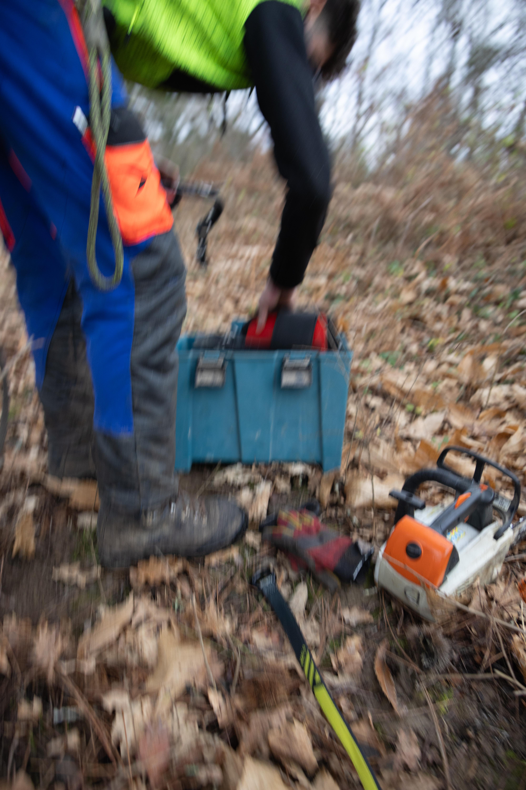
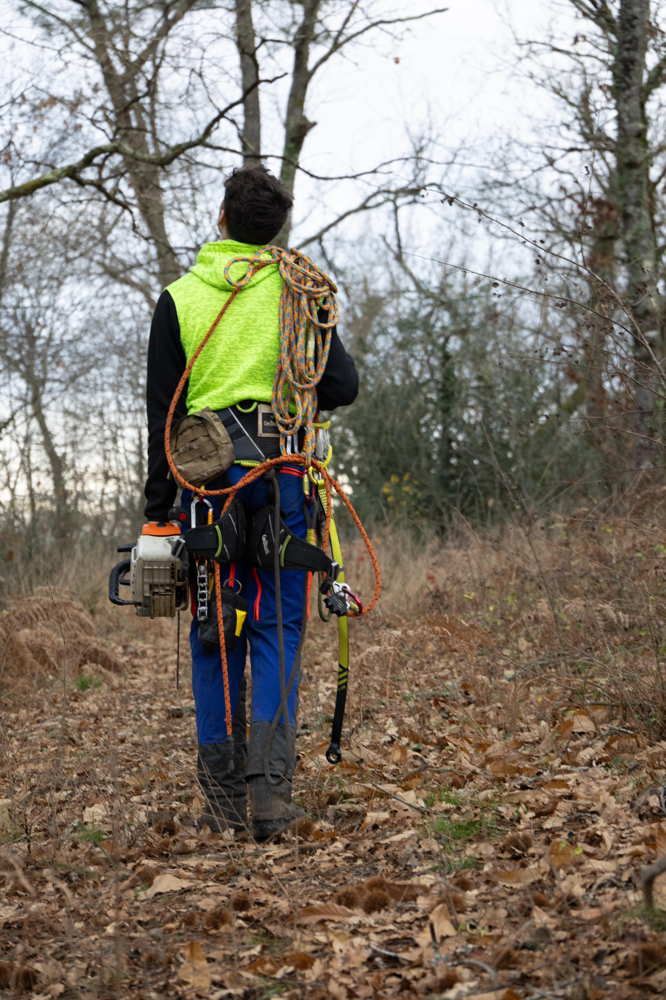

Ce que nous faisons
Nos Prestations
Interventions professionnelles à Dax et alentours — Landes (40)

Élagage
L'élagage est une intervention délicate qui requiert expertise et maîtrise des techniques de grimpe. Pierre-Louis intervient en hauteur avec un équipement professionnel certifié pour garantir la sécurité de chaque chantier.
- Élagage de formation et de structure
- Taille d'entretien et nettoyage de couronne
- Élagage sanitaire (branches mortes, malades)
- Abattage directionnel et contrôlé
- Démontage en milieu contraint
- Broyage et évacuation des déchets verts

Débardage Forestier
Le débardage consiste à extraire et transporter les bois coupés hors de la forêt vers une zone de stockage ou de chargement. Cazelag dispose d'un débardeur HSM 805 pour des interventions efficaces et respectueuses des sols forestiers.
- Débardage avec porteur HSM 805
- Extraction sur terrains difficiles d'accès
- Respect des sols et de la régénération forestière
- Transport jusqu'à la place de dépôt
- Intervention sur coupes rases ou partielles
- Chantiers particuliers et professionnels

Travaux Forestiers
Au-delà de l'élagage, Cazelag prend en charge l'ensemble de vos chantiers forestiers : de la préparation du terrain à l'entretien régulier de vos parcelles, en passant par les opérations de débroussaillage et de broyage.
- Débroussaillage manuel et mécanique
- Broyage de végétaux et rémanents
- Coupe rase de parcelles
- Entretien de pistes et chemins forestiers
- Nettoyage après tempête ou chablis
- Travaux en zones humides ou sensibles
Travaux Agricoles
Partenaire des exploitations agricoles de la région, Cazelag intervient pour l'entretien de vos terres et l'assistance technique en milieu rural. Nous mettons notre savoir-faire au service des espaces agraires.
- Entretien des haies bocagères et palissages
- Broyage de refus (prairies, jachères)
- Abattage de sécurisation aux abords des champs
- Nettoyage de bordures et fossés
- Soutien technique et mécanique ponctuel
- Intervention rapide en cas de dégâts météorologiques
Un projet en tête ?
Contactez-nous pour un devis gratuit. Réponse rapide garantie.